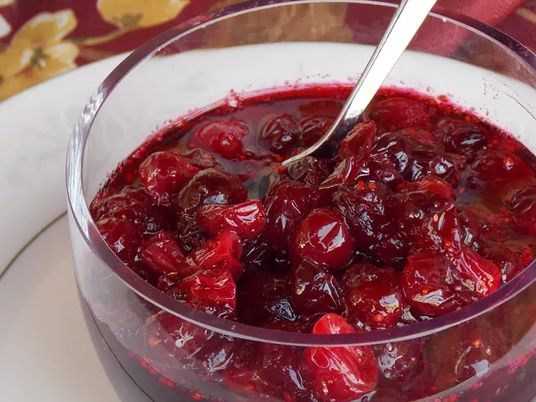

"Fresh cranberry sauce is a must for your Thanksgiving dinner"
This recipe is easy to make in just 20 minutes
Ingredients
- 1 cup water
- 1 cup white sugar
- 1 (12 ounce) package fresh cranberries (such as Ocean Spray)
Recipe instructions
- Bring water to a boil in a saucepan; add sugar and cook until sugar is dissolved, about 5 minutes.
- Stir cranberries into the saucepan and bring to a boil. Reduce heat to low,
simmer until cranberries have popped and sauce is chunky,
about 10 minutes or longer for desired consistency. The longer you cook it,
the less chunky it will be.
- Pour sauce into a serving dish or jars and cover until ready to use,
he pectin in the cranberries will make the cranberry sauce gel as it cools.
- he pectin in the cranberries will make the cranberry sauce gel as it cools.
Return to top
Return to main page